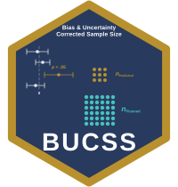

Package index
t Tests
One-sample, independent, dependent (paired), and unequal-variance (Welch) t test designs, that is, the standardized mean difference.
-
ss_buc_independent_t()ss_buc_smd() - Necessary sample size to reach desired power for an independent t test (or standardized mean difference) using a publication bias and uncertainty correction procedure
-
ss_buc_paired_t()ss_buc_smd_paired() - Necessary sample size to reach desired power for a dependent (paired) t test (or standardized mean difference) using a publication bias and uncertainty correction procedure
-
ss_buc_one_sample_t() - Necessary sample size to reach desired power for a one-sample t test using a publication bias and uncertainty correction procedure
-
ss_buc_welch_t() - Necessary sample size to reach desired power for a Welch (unequal variance) t test using a publication bias and uncertainty correction procedure
Between-Subjects ANOVA and ANCOVA
One-way, two-way, and general between-subjects designs, with or without covariates, planned per group or per cell.
-
ss_buc_one_way_anova() - Necessary sample size to reach desired power for a one-way between-subjects ANOVA using a publication bias and uncertainty correction procedure
-
ss_buc_factorial_anova() - Necessary sample size to reach desired power for a two-way between-subjects ANOVA using a publication bias and uncertainty correction procedure
-
ss_buc_factorial_anova_general() - Necessary sample size to reach desired power for a between-subjects ANOVA with any number of factors using a publication bias and uncertainty correction procedure
-
ss_buc_ancova() - Necessary sample size to reach desired power for an analysis of covariance using a publication bias and uncertainty correction procedure
-
ss_buc_rm_anova() - Necessary sample size to reach desired power for a one or two-way within-subjects ANOVA using a publication bias and uncertainty correction procedure
-
ss_buc_rm_anova_general() - Necessary sample size to reach desired power for a within-subjects ANOVA with any number of factors using a publication bias and uncertainty correction procedure
-
ss_buc_mixed_anova() - Necessary sample size to reach desired power for a two-factor split-plot (mixed) ANOVA using a publication bias and uncertainty correction procedure
-
ss_buc_mixed_anova_general() - Necessary sample size to reach desired power for a split-plot (mixed) ANOVA with any number of factors using a publication bias and uncertainty correction procedure
Correlation and Multiple Regression
A Pearson correlation, a single coefficient, the omnibus model R2, or a joint subset of predictors.
-
ss_buc_correlation() - Necessary sample size to reach desired power for a Pearson correlation using a publication bias and uncertainty correction procedure
-
ss_buc_reg_coef() - Necessary sample size to reach desired power for a single coefficient in a multiple regression using a publication bias and uncertainty correction procedure
-
ss_buc_R2() - Necessary sample size to reach desired power for a test of model \(R^2\) in a multiple regression using a publication bias and uncertainty correction procedure
-
ss_buc_reg_joint() - Necessary sample size to reach desired power for a joint test of multiple predictors in a multiple regression using a publication bias and uncertainty correction procedure
Multivariate and Latent Variable Designs
A two-group multivariate comparison, and the chi-square difference test between nested models.
-
ss_buc_manova() - Necessary sample size to reach desired power for a two-group multivariate comparison using a publication bias and uncertainty correction procedure
-
ss_buc_chisq_diff() - Necessary sample size to reach desired power for a nested model chi-square difference test using a publication bias and uncertainty correction procedure
Seeing and Auditing a Plan
Draw the assurance ceiling a prior result can support, and simulate the literature a plan came from to see how often a plan built this way actually reaches the target power.
-
plot(<bucss_power>) - Plot the assurance ceiling of a plan
-
ss_buc_sensitivity() - Simulate the literature a plan came from and audit how often it works
-
print(<bucss_sensitivity>) - Print a simulated sensitivity audit of a plan
-
print(<bucss_power>) - Print a bias and uncertainty corrected sample size result
-
tidy(<bucss_power>)glance(<bucss_power>) - Tidy and summarize a bias and uncertainty corrected sample size result
-
planning_sentence() - The planning sentence for a manuscript
Deprecated 1.x Functions
The dot-named 1.x API, kept working as thin wrappers around the ss_buc_* planners.
-
BUCSSBUCSS-package - BUCSS: Bias and Uncertainty Corrected Sample Size